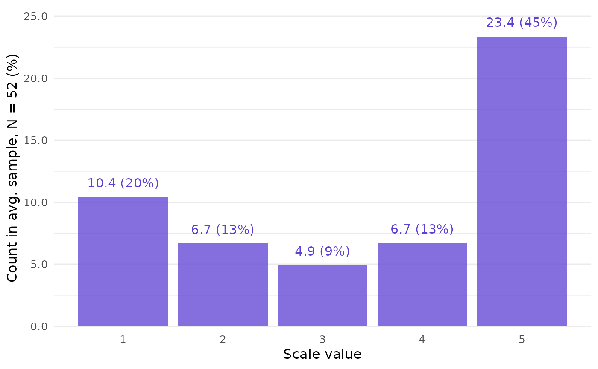

Call closure_plot_bar() to get a barplot of CLOSURE results.
For each scale value, the bars show how often this value appears in the full list of possible raw data combinations found by the CLOSURE algorithm.
Arguments
- data
List returned by
closure_combine().- frequency
String (length 1). What should the bars display? The default,
"absolute-percent", displays the count of each scale value and its percentage of all values. Other options are"absolute","relative", and"percent".- samples
String (length 1). How to aggregate the samples? Either take the average sample (
"mean", the default) or the sum of all samples ("all"). This only matters if absolute frequencies are shown.- bar_alpha
Numeric (length 1). Opacity of the bars. Default is
0.75.- bar_color
String (length 1). Color of the bars. Default is
"#5D3FD3", a purple color.- show_text
Logical (length 1). Should the bars be labeled with the corresponding frequencies? Default is
TRUE.- text_color
String (length 1). Color of the frequency labels. By default, the same as
bar_color.- text_size
Numeric. Base font size in pt. Default is
12.- text_offset
Numeric (length 1). Distance between the text labels and the bars. Default is
0.05.- mark_thousand, mark_decimal
Strings (length 1 each). Delimiters between groups of digits in text labels. Defaults are
","formark_thousand(e.g.,"20,000") and"."formark_decimal(e.g.,"0.15").
See also
closure_plot_ecdf(), an alternative visualization.
Examples
# Create CLOSURE data first:
data <- closure_combine(
mean = "3.5",
sd = "2",
n = 52,
scale_min = 1,
scale_max = 5
)
# Visualize:
closure_plot_bar(data)
